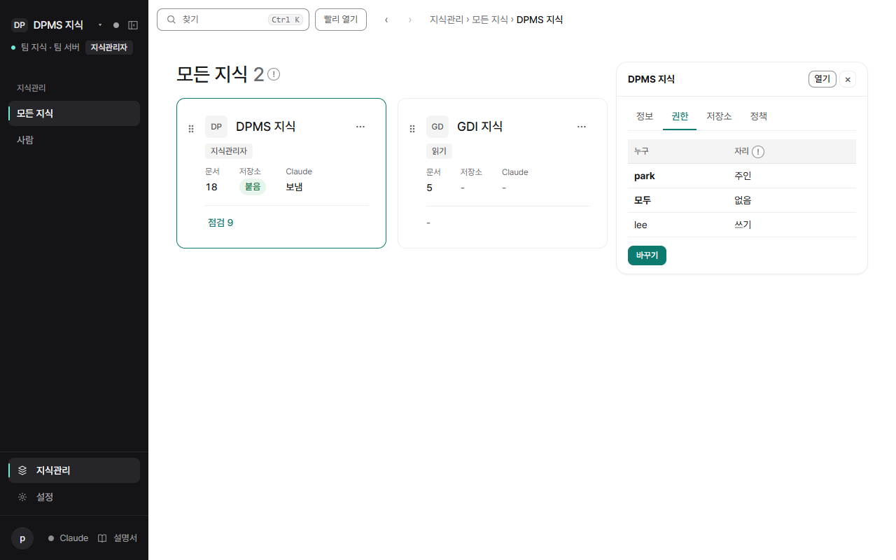
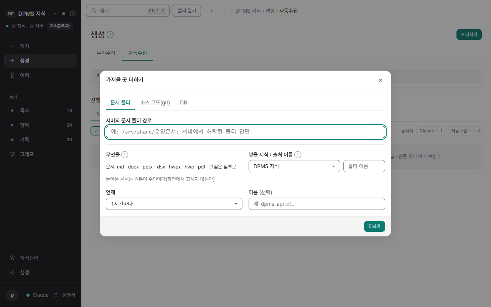
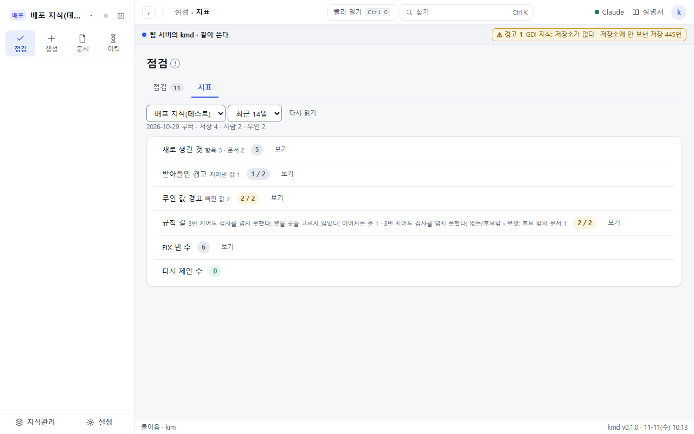

지식관리자
팀 지식 하나를 맡은 사람(주인 포함)이 읽는다. 기록이 문서가 되는 길(저장 제안 · 승인 · 무인 들이기와 다시 시도), 저장이 어떻게 들어갔는지 보는 점검 · 지표, 문서 하나의 문체 · 짜임을 정돈하는 다듬기, 이 지식을 누가 보고 쓰나 하는 권한, 자료를 지켜보며 맞추는 가져올 곳, 빈 지식을 폴더째 세우는 기초 세우기, 기록과 어긋난 문서를 세션에서 맞추는 다시 그리기 · 빠진 항목 채우기를 다룬다. 지식관리자 자리는 지식마다 받는다(총괄 관리자는 모든 지식의 지식관리자다).
1기록이 문서가 되는 길
정리(모아서 나중에 넣기)는 없다. 어느 길로 들어오든 기록과 항목 글이 저장 한 번으로 같이 들어간다. 지식은 팀 · 개인 모두 늘 승인 저장이다: 사람은 저장 제안을 보고 승인한 것만 넣고, 사람이 없는 일은 늘 들어간다.
- 사람의 저장(세션 · 화면 고치기 · 별칭 더하기 · 보내기 · 대량 넣기): 서버가 저장 제안(넣을 곳 · 고침 · 새로 생긴 것 · 경고 · 오류)을 짓고 아무것도 쓰지 않는다. 화면은 「저장 확인」 창, 세션은 【저장 제안】 글로 보인다. 오류가 있으면 고쳐 다시 제안받고, 경고는 보고 승인하면 받아들인 것이다(기록 끝 「받아들인 경고」 · 지표 「받아들인 경고」). 그사이 지식이 바뀌면 아무것도 쓰지 않고 새 제안을 다시 보인다.
- 쓰기 자리도 새 문서(갈래 안) · 새 항목 · 새 갈래를 저장 제안으로 세운다. 새로 선 것은 지표 「새로 생긴 것」 에 14일 남는다. 고칠 것이 있으면 지식관리자가 나중에 구조에서 고친다.
- 경위만 있는 기록(바뀐 값 없이 왜 그렇게 했나만)은 글을 바꾸지 않고 그 항목에 이어진다(이력의 「글 그대로」). 이을 항목이 없으면 문서 「기록 모음」 의 그 달 항목에 이어진다.
- 사람이 없는 일(파일 넣기 · 가져올 곳 · 정정 · 다시 들이기): 팀 일꾼(팀 구독의 Claude)이 기록과 항목 글을 같이 짓고 검사를 넘으면 들어간다. 값이 재료와 어긋나도 막지 않고 기록 끝 「값 대조」 로 잰다(지표 「무인 값 경고」). 검사에 걸리면 두 번까지 고쳐 쓰고, 그래도 못 넘으면 지식에 아무것도 쓰지 않고 아래 다시 시도로 간다. 생성 › 진행에서 「짓기 › 넣기」 와 들어간 곳이 보인다.
- 기록 고치기: 그 기록이 넣은 항목을 문서 고치기와 같은 편집기로 고쳐 저장한다. 바로잡는 기록이 원래 기록에 이어진다.
- 지식관리자가 승인한 일(다듬기 · 구조 · 기초 세우기): 걸리면 아무것도 쓰지 않고 그 걸음에서 선다(「걸음 실패」 · 글이나 구조안을 고쳐 다시).
- 값이 바뀐 곳은 이력에 「옛 값 → 새 값」 으로 남고 항목마다 되돌릴 수 있다. 들어간 뒤 고칠 것은 그 기록의 [되돌리기] · [고치기](기록 고치기)로 한다.
다시 시도와 실패 일감
무인 들이기가 끝내 검사를 넘지 못하면 지식에는 아무것도 쓰지 않는다. 원문을 그대로 넣는 길은 없다. 넣으려던 원천은 일감이 쥐고 기다린다.
- 다시 시도: 10분 · 1시간 · 6시간 뒤에 팀 일꾼이 처음부터 다시 짓는다(자동 세 번). 그사이 지식이 바뀌었으면 바뀐 지식으로 다시 찾는다.
- 실패 일감: 세 번 뒤에도 못 넘으면 진행 화면에 「못 들임」 으로 남는다. 그 줄을 누르면 마지막 까닭과 시도 수가 보이고, 지식관리자가 [다시 시도](처음부터 다시) 또는 [그만두기](원천을 버린다)를 누른다.
- 세지 않는 것: 팀 일꾼의 로그인이 끝났거나 한도에 닿아서 못 돈 것은 시도로 세지 않고 풀릴 때까지 기다린다. 하루 상한을 넘은 것은 다음 날로 넘긴다.
- 넣을 것 없음: 미정만 든 메모 · 값도 동작도 바꾸지 않은 커밋처럼 넣을 것이 없는 원천은 실패가 아니다. 아무것도 쓰지 않고 까닭만 진행 화면에 남는다.
- 무인 실패가 잦으면(지표 「무인 실패」 10% 넘음) 팀 일꾼 로그인 · 하루 상한 · 까닭 묶음을 본다.
예전 정리 화면 · 정리 설정은 「저장이 곧 반영」 개편(2026-11)으로 걷었고, 옛 정리 화면 주소는 더 열리지 않는다. 저장은 늘 승인 저장이다(사람은 저장 제안 → 승인 · 무인은 검사를 넘으면 들어가고 못 넘으면 다시 시도). 저장 승인 전 기록은 「기록」 으로만 보인다(읽기만).
2문서 다듬기 · Claude 에 보내지 않음
머리 줄 ⋯ 메뉴의 다듬기(지식관리자 · 팀 지식): 그 문서 하나의 문체 · 짜임(경위 걷기 · 짧은 문장 · 목록 · 표)을 팀 일꾼이 정돈한다. 늘 도는 단계가 아니라 손으로 거는 일이다.
- 확인 창(「문체 · 짜임만 정돈한다 · 값은 바꾸지 않는다」)에서 [다듬기] 를 누르면 도는 일에 오른다. 같은 문서에 도는 다듬기가 있으면 그것을 쓴다.
- 항목마다 값(수 · 이름 · 코드 · 날짜 · 주소)이 옛 글과 같을 때만 넣는다. 값이 바뀌는 항목은 빼고 그 까닭을 도는 일과 기록(「넣지 않은 항목」)에 남긴다.
- 결과는 이력 갈래 「다듬기」 한 줄(기록 「다듬기: 문서」)이고, 항목마다 [되돌리기] 가 된다.
- 원본이 주인인 문서 · ## 항목이 없는 문서는 다듬지 않는다(## 없는 옛 문서는 운영 설명서 7절의
kmd docfmt <지식> --lift로 먼저 올린다).
Claude 에 보내지 않음(지식관리 › 모든 지식 › 지식 상세 › 정책의 「Claude 에 보내기」 스위치 · 지식관리자): 켜면 이 지식의 글을 팀 일꾼에게 보내지 않는다. 파일 넣기 · 가져올 곳은 일감을 세우지 않고 「이 지식은 Claude 를 쓰지 않아 무인으로 들일 수 없다」 고 알리며(지식에 아무것도 쓰지 않는다), [다듬기] 는 거절한다. 세션의 저장 제안 · 승인은 그대로 된다. 팀원의 Claude Code 대화는 kmd 도구로 여전히 이 지식을 읽는다. 이 설정은 지식 안의 _members.md 에 적혀 저장소와 같이 간다.
3권한: 이 지식의 자리

- 실제 자리는 사람 줄과 그 사람이 든 묶음 가운데 높은 것이다.
- 새 사람을 만드는 것은 총괄 관리자다. 지식관리자는 있는 사람 · 묶음에 이 지식의 자리를 준다.
- 주인 넘기기 · 지식 삭제는 총괄 관리자가 한다(지식관리자 혼자 넘기거나 지우지 않게).
- 화면에서 숨기는 것으로 끝나지 않는다. 서버가 모든 길(목록 · 찾기 · 이력 · 알림 · Claude Code)에서 자리로 거른다.
4자동수집: 가져올 곳

| 유형 | 들어오는 것 | 누가 더하나 |
|---|---|---|
| 문서 폴더 | 바뀐 파일만. 파일마다 팀 일꾼이 기록과 항목 글을 한 번에 지어 갈래 · 주제 문서의 항목에 넣는다(못 넘으면 다시 시도). 원본에서 지운 파일은 지식을 바꾸지 않는다 | 서버 폴더는 총괄 관리자 |
| 소스 코드(git) | 더한 때의 묶음이 기준. 새 묶음마다 팀 일꾼이 바뀐 값 · 차이를 읽고 기록과 걸린 항목의 글을 한 번에 고친다(넣을 항목이 없으면 건드린 항목이나 「기록 모음」 달 항목에 글 그대로 잇는다) | 허락된 호스트(sourceHosts)의 https 는 지식관리자 · ssh 는 총괄 관리자 |
| DB | 테이블마다 정의 표 · 바뀐 테이블만. 항목(table:테이블)을 항목 장부에 세운다. 늘 읽기 전용 · 행은 읽지 않는다 | 허락된 호스트면 지식관리자 |
- 줄을 누르면 자세히: 상태 · 마지막 바뀜 · 주소 · 넣을 지식 › 문서 · 언제 · 자격을 고치고 [고친 것 저장] · [전체 다시 맞추기] · [지우기](들어온 문서는 그대로).
- 쓰기 자리 사람의 [관리자에게 부탁] 은 총괄 관리자의 관리 화면 문제 줄에 선다(같은 부탁은 한 줄로).
가져온 표
가져올 곳이 가져온 표(DB 테이블 정의 · 꾸러미 판 · 표 파일)는 문서에 바로 쓰이지 않는다. 바뀐 표만 원천 글 하나(표 15개씩)로 지어 들이기 일감이 되고, 팀 일꾼의 Claude Code 세션이 자리를 정해 기록과 항목 글로 넣는다. 그래서 가져온 표도 진행 화면의 일 줄에 서고, 끝내 못 넣으면 실패 일감이 된다. 예전에 채워진 회색 상자 표(저절로 채우는 표)는 그대로 읽히고 사람은 고치지 못한다. 한꺼번에 크게 바뀌면(새 10개 넘게 · 사라짐 10% 넘게 · 문서 폴더는 사라짐만) 넘기지 않고 멈춘다. 생성 › 도는 일의 「멈춤 · 확인」 거름에서 그 일을 골라, 맞으면 [그대로 맞추기], 아니면 [이번은 건너뛰기]. 「Claude 에 보내지 않음」 으로 둔 지식에는 가져올 곳을 걸 수 없다.
손으로 고친 파일
누가 편집기로 지식 폴더의 문서를 직접 고치면 kmd 는 그 글을 들이지 않는다. 고친 글의 사본을 두고 문서를 되돌린 뒤 지식 › 점검 위에 「손으로 고친 파일」 로 세운다. [넣을 것으로 올리기] 를 누르면 고친 항목의 새 글이 넣을 것이 되어 Claude 가 짓고 저장 제안으로 선다(생성 › 진행에서 [넣기]). [버리기] 는 고친 글을 버린다. 지식관리자만 보고 누른다.
항목 장부 고침
잘못 선 항목은 지식관리자가 거둔다: 폐기(더 쓰지 않는다) · 합치기(다른 항목으로 잇고 라벨과 별칭을 옮긴다) · 별칭 빼기. 줄을 지우지 않고 폐기 표시를 달며, 까닭 한 줄과 함께 이력에 남는다. 항목 화면 오른쪽 「속성」 의 [합치기] · [폐기] 와 별칭 옆 [빼기] 로 한다(까닭 한 줄을 적는다). 지식관리자가 기록을 통째로 [되돌리기] 하면 그 기록이 세운 항목 장부 줄에도 폐기 표시가 달린다(그 뒤 다른 기록이 쓴 항목은 둔다).
5다시 그리기 · 빠진 항목 채우기(세션 스킬)
저장이 조각조각 쌓여 경위와 결론이 섞인 항목, 회의 기록은 있는데 회의록 문서에는 그 회의가 없는 것 같은 기록과 문서의 어긋남을 맞춘다. 화면 단추가 아니라 Claude Code 세션에서 스킬 kmd-migrate 로 한다. 지식관리자가 세션에서 결과를 보고 항목마다 승인한 것만 넣는다.
| 하는 일 | 무엇을 | 재료 |
|---|---|---|
| 다시 그리기 | 있는 항목 하나를 지금 상태로 다시 쓴다. 날짜별 덧붙임 · 경위 · 질문 목록을 걷고 결론 · 값 · 규칙만 남긴다 | 그 항목을 건드린 기록 전부(오래된 순 · 늦은 것이 이긴다) |
| 빠진 항목 채우기 | 회의록 · 주간보고 같은 사건 문서에 없는 회의 · 통화를 새 항목(「YYYY-MM-DD 무엇」)으로 세운다. 날짜 차례 자리에 들어간다 | 그 회의 · 통화의 기록 |
이렇게 부탁한다
kmd 저장소(kmd 폴더)에서 Claude Code 세션을 열고 말로 부탁한다. 스킬이 진단부터 시작해 할 것을 묻는다.
| 하고 싶은 것 | 세션에 하는 말(예) |
|---|---|
| 지식 전체에서 어디가 어긋났나 보기 | 「DPMS 지식 진단해 줘. 다시 그릴 만한 항목이랑 회의록에 빠진 회의 보여 줘」 |
| 회의록에 빠진 회의 채우기 | 「DPMS 회의록에 빠진 회의 · 통화 채워 줘」 |
| 항목 하나 다시 그리기 | 「위험및이슈관리대장 DPMS-ISS-01 을 기록으로 다시 그려 줘」 |
| 문서 하나를 잡고 다시 만들기 | 「위험및이슈관리대장 다시 만들어 줘」(그 문서에서 기록이 쌓인 항목을 하나씩 다시 그린다) |
| 화면설계서처럼 큰 문서를 나눠서 | 「화면설계서에서 기록 5건 넘는 항목만 다시 그려 줘. 다섯 개씩 보여 주고 승인받아」 |
| 주간보고처럼 문서가 아직 없는 갈래 | 「주간보고 기록이 어디 들어가 있는지 보여 줘」(문서를 새로 세우지는 않는다. 세울지는 사람이 정한다) |
세션은 항목마다 아래처럼 보이고 승인을 기다린다. 「넣어」 · 「이 문장은 살려」 · 「이건 빼」 처럼 답한다.
【다시 그리기】 이슈 대장 › DPMS-ISS-01
이어진 기록 11 · 줄 30 → 18
바뀐 값: 진행상태 확인 중 → 해결
사라지는 문장 2
- 「해결방안: SCADA 매뉴얼에서 …」
- 「남은 확인 1 ~ 18 …」
승인하시면 넣습니다(기록 1 · 커밋 1).지키는 것
- 저장 검사는 화면 저장과 같다. 기록에 없는 값을 지어내면 「근거에 없는 값」, 있던 값이 빠지면 「옛 글의 값이 빠졌다」 로 걸려 아무것도 쓰지 않는다. 지운 값은 기록에 「옛 값 → (뺌)」 으로 남겨야 넘는다.
- 사라지는 표 행 · 문장은 사람이 보고 「빼도 된다」 고 해야 넣는다.
- 기록이 없는 항목은 다시 그리지 않는다. 재료가 지금 글뿐이라 얻을 것이 없다. 문체만 고를 것이면 2절 [다듬기].
- 저장 승인 전 기록(「기록」 으로만 보이는 것)은 재료가 아니다. 앞서 Claude 가 지은 기록(다듬기 · 들이기)은 값의 근거로만 쓴다.
- 머리 이름은 바꾸지 않는다. 항목 나누기 · 합치기 · 지우기는 화면 문서 고치기로 한다.
- 항목 하나가 기록 하나(태그
rebuild)로 들어간다. 이력에 남고 항목마다 [되돌리기] 가 된다.
서버에 반영하기
세션은 지식의 사본(저장소에서 받은 git 폴더)에 쓴다. 팀 서버가 도는 폴더에는 바로 쓰지 않는다.
- 세션이 묶음(문서 하나)마다 사본을 저장소로 올린다(push).
- 곧바로 총괄 관리자가 관리 화면 알림의 「백업이 앞섰다」 줄에서 [백업에서 받기] 를 누른다(서버에서는
kmd backup pull <지식>). 앞으로만 받고, 받은 글에 새 오류가 있으면 되돌린다. - 올린 뒤 받기 전에 서버에서 저장이 있으면 「갈라졌다」 가 된다. 받지 말고 어느 쪽이 맞는지 정한다(운영 설명서 불러오기).
그 지식의 지식관리자 · 총괄 관리자가 쓴다. kmd 저장소와 지식 사본(저장소 git)에 손이 닿아야 한다. 스킬은 저장소의 .claude/skills/kmd-migrate, 도구는 scripts/kmd-migrate.mjs(진단 scan · 항목 읽기 trail · 기록 읽기 rec · 마른 검사 check · 넣기 put)다. 세션이 알아서 부르므로 직접 칠 일은 드물다.
5-1구조: 폴더 · 이름 · 새 문서 · 차례
문서 › 구조(목록 칸 문서 나무 머리의 연필 아이콘 · 지식관리자). 문서 나무 하나로 바꾸고 아래 바의 [저장] 한 번으로 넣는다.
- 옮기기: 문서나 폴더를 끌어 폴더에 놓으면 그 안으로, 줄 위 · 아래에 놓으면 그 자리에 끼운다. 「맨 위」 줄에 놓으면 가장 바깥으로. 끌기가 어려우면 줄의 화살표(또는 줄에서 M 키)로 옮길 곳을 고른다.
- 여럿 한꺼번에: Ctrl 을 누른 채 누르면 하나씩, Shift 를 누른 채 누르면 이어서 고른다. 터치에서는 [여러 개 고르기] 를 켜고 누른다. 「고른 것 n」 줄의 [옮기기…] 로 한 번에 옮긴다.
- 이름: 줄을 두 번 누르거나 F2(또는 연필). 이름 = 제목 = 파일 이름이라 이름을 바꾸면 파일 이름도 바뀐다. 제목과 파일 이름이 다른 옛 문서는 노란 띠의 [제목으로 맞추기].
- 새 문서 · 새 폴더: [+ 새 문서] · [+ 폴더] 를 누르면 고른 폴더 안에 이름 칸 한 줄이 생긴다. 새 문서는 이름 한 줄(
# 이름)로 선다. 갈래의 별칭에 걸리는 이름(「주간 회의 메모」 → 회의록)은 세우지 않는다. - 차례: 끌어서 줄 사이에 놓거나 Alt ↑↓. 목록 칸 문서 나무가 같은 차례로 보인다.
- 저장: 먼저 「옮김 · 새 문서 · 고칠 링크 · 장부 줄」 을 보이고 확인을 받는다. 옮긴 문서를 가리키는 링크 · 문서 장부 · 갈래 장부 · 가져올 곳 · 차례 장부를 같이 고쳐 커밋 하나 · 이력 한 줄로 남긴다. 그사이 누가 짜임을 바꿨으면 아무것도 쓰지 않고 다시 읽게 한다.
- 원본이 주인인 문서(자물쇠)와 그것이 든 폴더는 옮기지 않는다. 문서 지우기는 없다: 「보관」 같은 폴더로 옮긴다.
- 항목 옮기기 · 합치기 · 나누기: 문서를 고르면 오른쪽 카드에 항목 줄이 선다. 항목을 건드리면 단계 띠 1 구조안 › 2 해 보기 › 3 넣기 로 간다(넣기 전에는 지식이 바뀌지 않는다).
- [Claude 구조안]: Claude 가 지금 짜임을 보고 지은 구조안을 나무에 놓는다(팀은 팀 일꾼 · 내 PC 는 이 PC 의 Claude). 도는 동안 [그만두기] · 받은 뒤 [모두 처음대로] 로 버릴 수 있다. 합치기 · 나누기 항목은 글이 비어 있어 줄의 [Claude 짓기 n] 이나 손으로 쓴다.
- [Claude 짓기](합치기 · 나누기 창): 출처 글로 새 글을 지어 칸을 채운다. 머리 줄 같은 꼴 오류는 두 번까지 고쳐 쓰고, 그래도 걸리면 「걸음 실패」 로 알리고 지은 글을 남긴다(고쳐 쓰거나 손으로). 출처에 없는 값은 노란 줄로 알리기만 한다. 「Claude 에 보내지 않음」 지식은 두 단추가 꺼진다. 팀 일꾼 판이 옛것이면 그 까닭을 보인다.
지식관리 › 모든 지식 › 지식 상세 › 정책. 켜면 하루에 한 번 지난날 들어간 기록 수를 지식관리자에게 알린다(알림만 · 할 일이 아니다). 예전의 「승인 받고 넣기」 는 걷었다. 승인은 사람이 저장 제안을 보고 하는 것으로 늘 거친다.
지식 상세 › 정책의 이슈 주소에 주소 틀(예: https://jira.example/browse/{값})을 넣으면, 갈래 이름에 「이슈」 가 든 항목 화면에 [이슈 열기 ↗] 가 선다. 지식 안 _members.md 의 「- 이슈 주소:」 한 줄로 남아 저장소 · 불러오기를 따라간다.
지식관리 › 모든 지식의 내 지식(지식관리자) 줄 상태 칸에 점검 경고 n(점검 › 점검으로) · 부탁 n(생성 › 자동수집 머리의 가져올 곳 부탁) · 가져오기 문제 n(못 가져옴 · 멈춤)이 선다. 이 줄과 점검 › 지표만 보면 된다.
5-2기초 세우기(팀): 폴더째 새 지식
지식관리 › 기초 세우기(총괄 관리자 · 빈 지식이 있는 지식관리자). 빈 팀 지식에 재료 폴더를 올려 첫 문서 짜임을 세운다. 위 단계 띠 지식 · 재료 · 거르기 · 구조안 · 짓기 · 진단 · 넣기를 차례로 가고, 바닥 줄의 주 단추 하나로 다음 단계에 간다(막혔으면 「먼저: 까닭」). 넣기 전에는 지식이 바뀌지 않는다. [+ 새 지식] 창의 [기초 세우기] · 빈 지식의 생성 › 수기수집 「빈 지식이다 · 폴더째라면」 줄에서도 온다.
- 재료: [폴더] · [파일] 이나 끌어다 놓기. 원본은 팀 서버로 간다: 서버가 파일마다 글로 바꿔 두고 원본은 두지 않는다. 한 묶음 300 파일 · 200MB. 넘으면 나눠 올린다: 앞 묶음을 넣은 뒤 같은 지식에 [다음 묶음](묶음마다 구조안을 승인). 스캔 pdf · 아주 큰 대량은 Claude Code 의 kmd-seed.
- 거르기: 옛 판 · 같은 글은 빼기, 비밀 의심 · 스캔은 보류가 처음 값. 비밀 의심 파일은 팀 일꾼(Claude)에 보내지 않는다.
- 구조안: 위에 비용(파일 n · 글 n 자 · 팀 일꾼 일 · 오늘 한도 n 남음). Claude 안은 팀 일꾼이 짓는다: 「팀 일꾼 없음」 · 「팀 일꾼 짜임 모름」 이거나 오늘 한도가 0 이면 꺼진다. 폴더 그대로는 파일 하나가 문서 하나(Claude 없음).
- 짓기: 문서마다 팀 일꾼 일 하나. 처음 3 문서는 [보기] 로 읽고 승인한 뒤 [모두 짓기]. 남은 하루 한도보다 문서가 많으면 [모두 짓기] 가 꺼진다(내일 잇거나 손으로).
- 진단 · 넣기: 연습 판에 해 본 뒤 넣는다. 걸린 글은 「걸음 실패」 로 서고 아무것도 쓰지 않는다 → [글 고치기] → [이어 넣기]. 브라우저를 닫아도 팀 서버에서 이어 돌고, 24시간 걸음이 없으면 「멈춤」([이어 하기]).
6좋은 지식으로 두기
- 본문에는 확정된 지식만. 아직 반영 안 된 기록 · 초안 · 경위는 넣지 않는다.
- 문서 첫머리 1~3문장 요약 · 항목 하나 300줄 안. 넘으면 대상마다 항목으로 나눈다.
- 항목 이름에 날짜 · 「수정」 · 「추가」 를 넣지 않는다(회의록 같은 사건 문서만 날짜).
- 출처 · 상태 · 내부 표식은 kmd 가 문서 끝 「참고」 에 둔다. 본문에 주석 · 기록 링크를 두지 않는다.
7점검 · 지표
잉크 기둥 지식 메뉴의 점검(그 지식의 지식관리자). 본문 머리 탭은 점검 · 지표다. 할 일 목록이 아니라 메뉴에 배지가 없다.
점검 › 점검: 걸린 검사만 판 한 장씩 선다(경고 · 알림 칩 · 묶음 이름과 (!) · 큰 수 · 검사 이름 · [보기] 로 목록). 0 인 검사는 「문제 없음 n」 아래 이름 + 0 한 줄 무리로 모인다. 검사는 항목 없음 · 장부 밖 · 폐기 항목 · 잃은 항목 · 장부에 없는 항목 · 별칭 겹침 · 깨진 머리 · 깨진 링크(문서 › 항목 · 누르면 그 자리)다. 알림 둘: 「뜻 없는 항목」(장부에 뜻 한 줄이 없다) · 「성격 없는 문서」(문서 성격 표에도 갈래에도 없다). kmd 는 빈 칸을 이름 · 첫 문장으로 짐작해 메우지 않는다. 채우는 것은 그 항목 · 문서를 고칠 때다. 묶음은 기록 · 장부 · 문서 · 낱말이다. 셸 점검이 더 필요하면 총괄 관리자에게 kmd guard <지식> 와 kmd search-check <지식>(찾기 점검: 제목 문제와 바꾼 문제)를 부탁한다.
점검 › 지표

이 지식의 저장이 어떻게 들어갔는지 잰 값이다. 생성 룰 · 검사 기준을 고칠 근거로 본다.
- 위 줄: 지식(지식관리자인 지식이 둘 이상일 때) · 기간 최근 7 · 14(처음) · 30 · 90일 · [다시 읽기]. 그 아래 「<첫날> 부터 · 저장 n · 사람 n · 무인 n」.
줄 여섯(이름에 마우스를 올리면 뜻):
| 줄 | 세는 것 |
|---|---|
| 새로 생긴 것 | 저장이 새로 세운 문서 · 항목(문서 · 장부) · 갈래 · 종류(14일 남는다) |
| 받아들인 경고 | 경고를 보고 승인해 넣은 저장 / 사람 저장 |
| 무인 값 경고 | 값 대조가 걸린 무인 저장(파일 넣기 · 가져올 곳 · 정정 …) / 무인 저장 |
| 무인 실패 | 첫 시도에 못 넘어 다시 시도로 간 무인 일감 / 무인 일감. 까닭 옆의 「끝내 실패」 는 실패 일감으로 남은 수 |
| FIX 번 수 | 무인 저장이 문서 꼴을 고치려 다시 지은 번 수 |
| 다시 제안 수 | 사람이 저장 제안을 고쳐 다시 받은 번 수 |
- 수 칩: 무인 값 경고가 20%, 무인 실패가 10% 를 넘으면 노랗다. 수가 있는 줄은 까닭 몇 개(빠진 값 · 지어낸 값 · 비슷한 이름 …)가 작은 글로 붙는다.
- [보기]: 그 줄의 기록(새 것 위 · 50 까지)이 펼쳐지고, 누르면 기록이 열린다. 고칠 것은 그 기록의 [되돌리기] · [고치기]로 한다. 바라는 고침(프롬프트 · 규칙)은 이슈로 낸다.
- 이 기간에 들어간 저장이 없으면 「이 기간에 들어간 저장이 없다」. 읽지 못하면 까닭과 [다시 읽기].
- 재는 것은 이 팀 서버의 저장 측정 줄과 기록 끝 「새로 세움」 이다. 사람 이름은 싣지 않는다. 「봤음」 표시 · 배지가 없다.